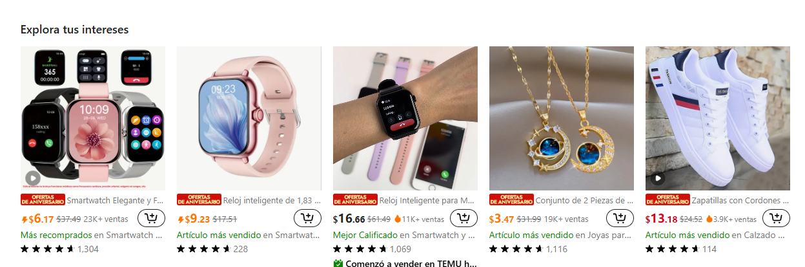
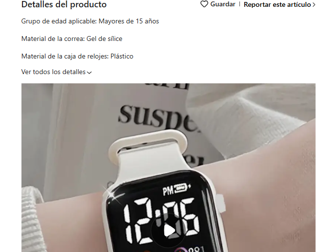

Su funcionamiento es reconocer un párrafo como un texto, dejando un espacio vertical al antes y después del mismo de esta manera se hace para que todos los párrafos vean separados.
Esta etiqueta ayuda a la página web para ordenarla por secciones, es decir, define divisiones o secciones en el documento.
Su función principal es la de permitir la estructuración y diseño de la página web.
Se utiliza para indicar que el texto contenido es de importancia y por lo general, se visualiza en negrita.
En este caso se utiliza como para marca precios u ofertas especiales para poder resaltar lo más importante.

Se utiliza para insertar imágenes en una página web, es la etiqueta independiente lo que significa queno necesita una etiqueta de cierre.
Su función principal es mostrar una imagen en la ubicación específica dentro del documento HTML, tomando la imagen desde una fuente externa refernciada por la URL.
Temu utiliza mucho esta etiqueta para poder mostrar los productos en venta.
La etiqueta <br< se utiliza para dar un salto de línea en el documento, de esta manera se puede evitar que la página web se vea muy saturada, ya sea de imágenes o de texto.
Esta es en la parte en la que se organiza toda la estructura de página web, define el contenido principal visible, es decir, todo lo que el usuario ve en el navegador, como texto, imágenes, enlaces, etc

Se utiliza para definir la sección de encabezado de la página web, de esta manera podemos ver en primer plano como por ejemplo el nombre de página, que algo importante que todos lo sepan entonces es necesario ponerla en la cabecera.